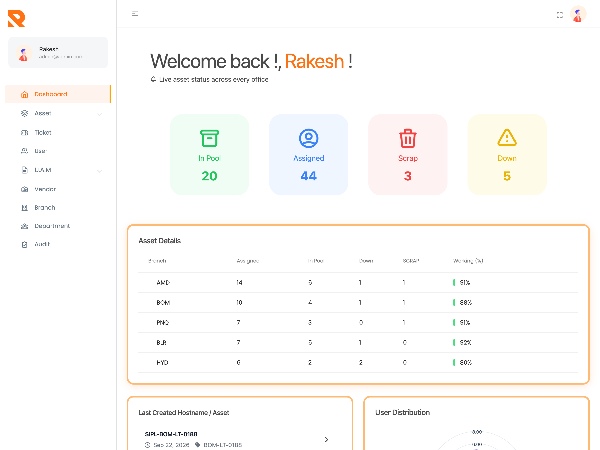
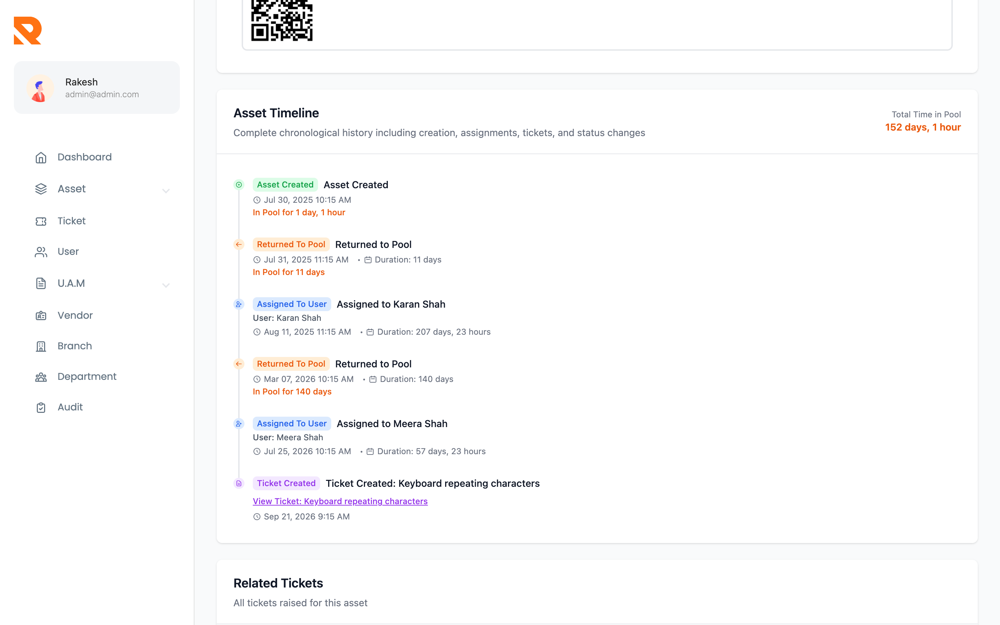
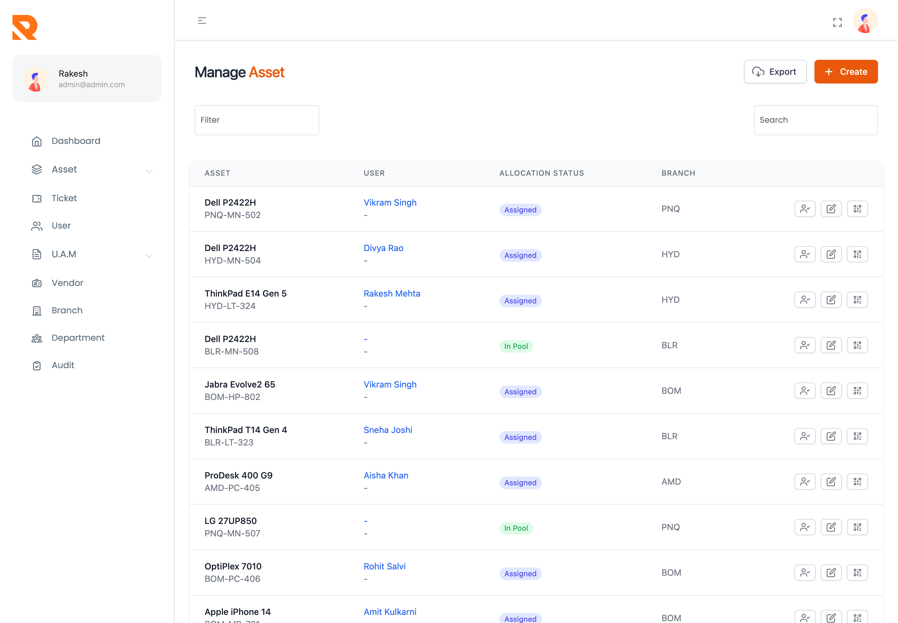
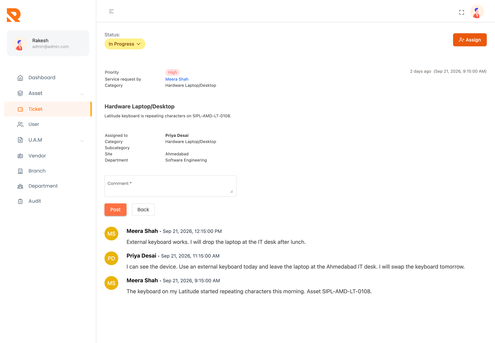
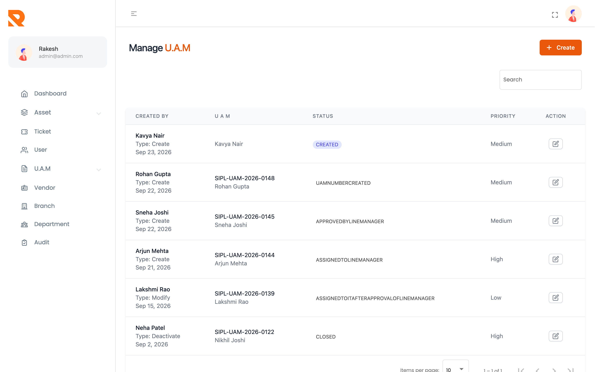
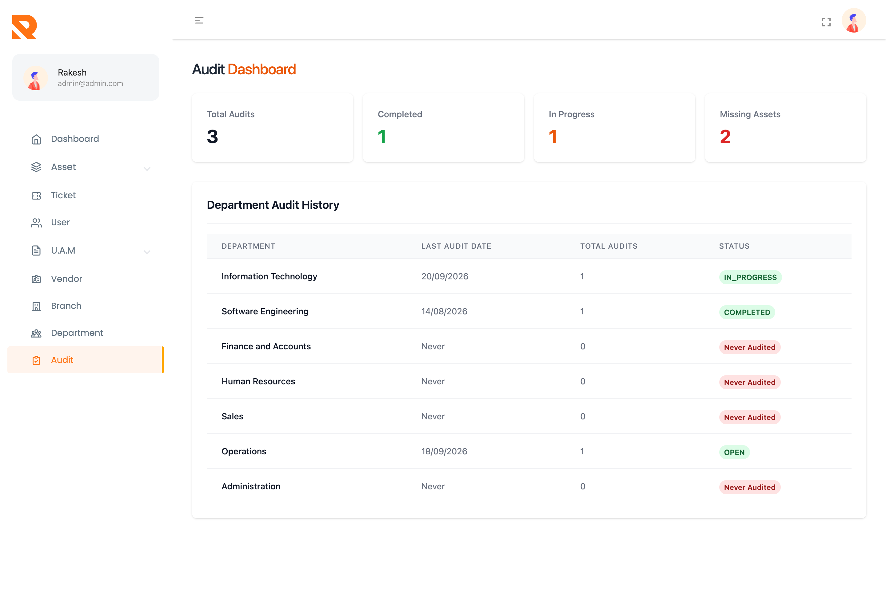
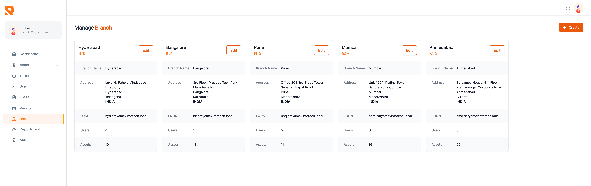
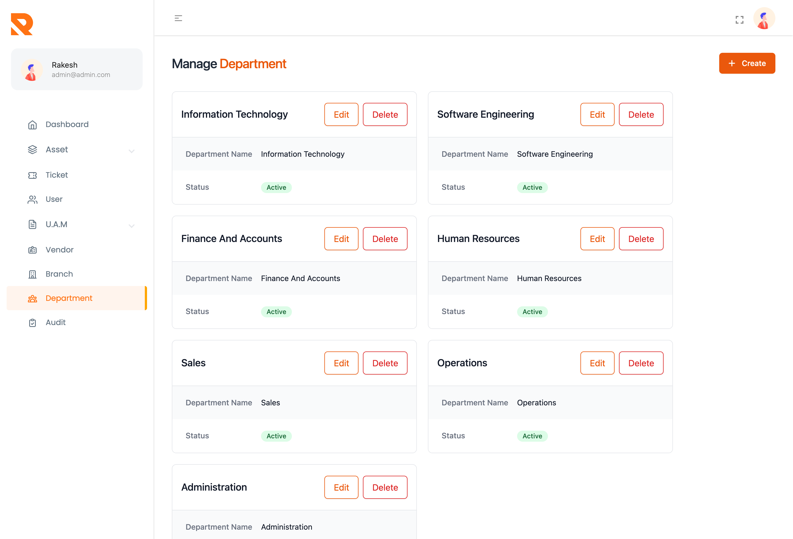
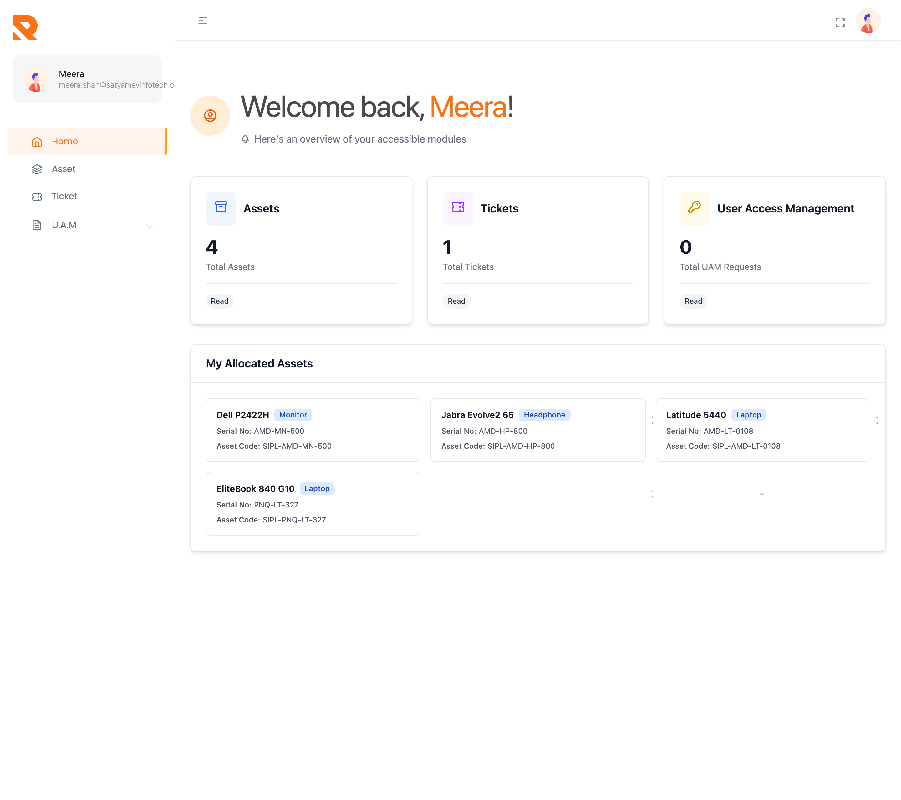

Asset registry
Every laptop, server, printer, mobile, and license — who has it, which office it sits in, what warranty covers it, and the history from purchase to retirement.
From the day equipment arrives to the day it is retired. AssetHub keeps the hardware, the support history, and the approval trail on the same record.
Most IT teams track hardware in a spreadsheet, support in email, and access approvals in whatever thread they started. AssetHub keeps all three tied to the same records.
Every laptop, server, printer, mobile, and license — who has it, which office it sits in, what warranty covers it, and the history from purchase to retirement.
Helpdesk tickets that link to the asset in question, so a repair history and a support history live on the same record.
A structured path for granting, changing, or revoking system access, routed through the approval chain the organization already uses.
Scan-based stock checks by branch and department, closing with a clear list of what was found and what is missing.
Built for IT administrators and helpdesk staff, for line managers approving requests, and for employees who need to see what is assigned to them.
Administrators see the whole estate. Everyone else gets a home scoped to their own access. Satyamev Infotech, five offices. This week’s joiners are marked allocated or still pending.


Dell Latitude 5440, Ahmedabad. Assigned to Karan Shah, returned to the pool, then issued to Meera Shah. The keyboard ticket sits on the same timeline.
Laptops, desktops, monitors, printers, mobiles, and a file server, each with a holder and an office code.


Meera Shah and Priya Desai, on the Ahmedabad Latitude. Closing a ticket requires a note of what was done.

Joiners in Ahmedabad, Mumbai, Pune, and Bangalore, plus a closed deactivation for a Mumbai leaver. A closed request cannot be quietly edited afterward.
The registry already knows which assets should be in a branch and department. Scanning starts the audit. Anything still unscanned at the close is marked missing.

Satyamev Infotech Private Limited. Ahmedabad is the head office. Mumbai, Pune, Bangalore, and Hyderabad run the same asset and ticket record.


Full access, including the executive dashboard, user creation, deletes, and password resets. Access cannot be narrowed.
The working role. Access is granted module by module: full, read-write, read-only, or none. This role runs physical audit scanning.
Own tickets, own access requests, and the equipment currently assigned to them. No view of other people’s records.
| Module | Administrator | IT Admin | Employee |
|---|---|---|---|
| Asset registry | Full, including delete | Configurable | Own allocated items |
| Support tickets | Full, including delete | Configurable | Raise and track own |
| Access requests | Full | Configurable, including who may issue a number | Submit and track own |
| Vendors, branches, departments | Full | Configurable | No access |
| Physical audits | Full | Configurable — this role scans | No access |
New accounts are created by an administrator. There is no open self-signup into the live system.

Meera Shah, Software Engineering, Ahmedabad. She sees her monitor, headset, and laptops — not the rest of the company.
The laptop assigned to someone is the same record that shows the ticket raised against it, the audit that last confirmed it, and the access request that came with it.
Role and module permissions are enforced in the interface and in the services. Every assignment, scan, and access step is stamped with who acted and when.
A browser, an API, and a database. Access-request forms are produced as print-ready documents when a paper record is required.